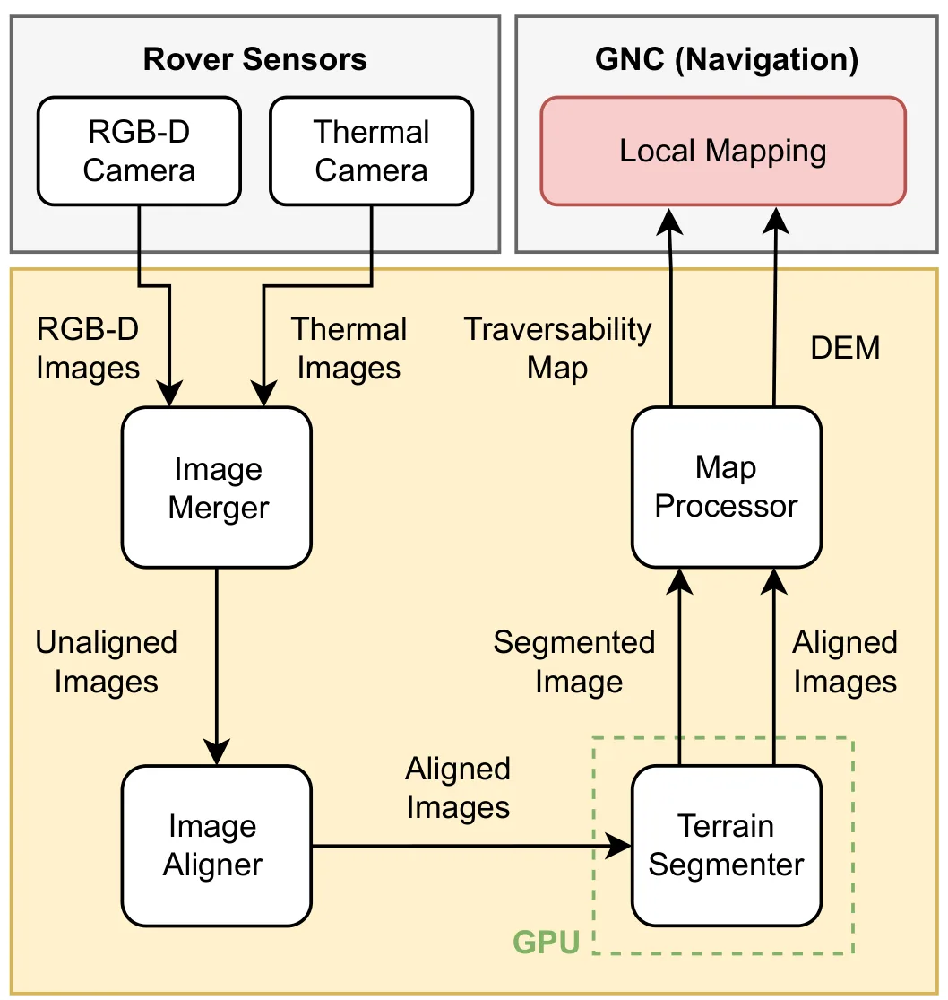
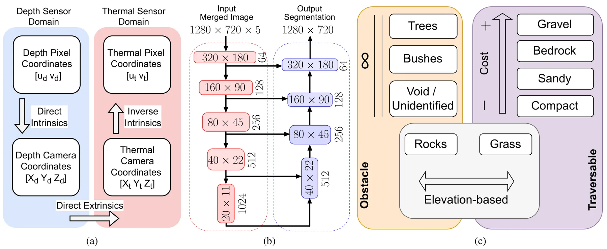
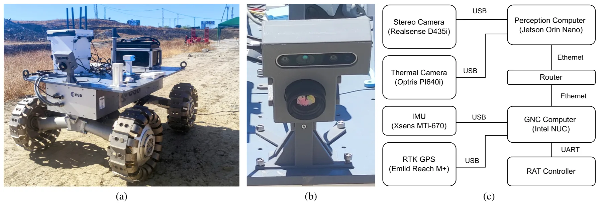
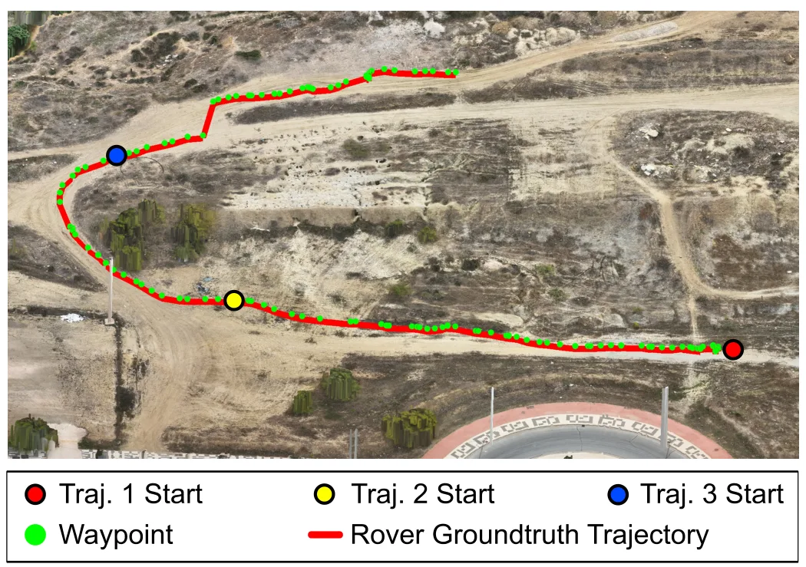
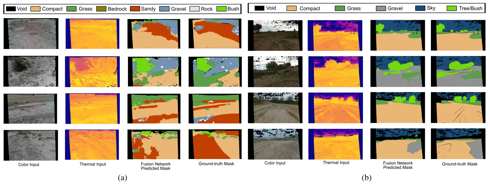
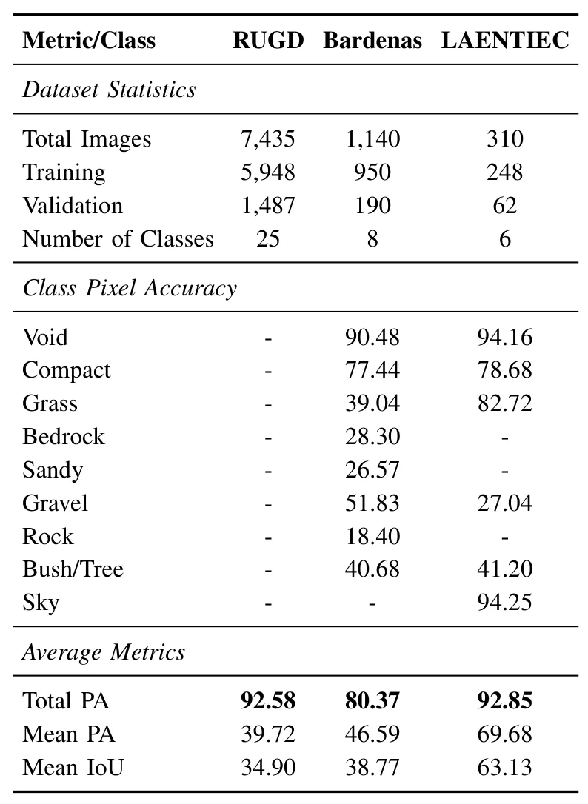
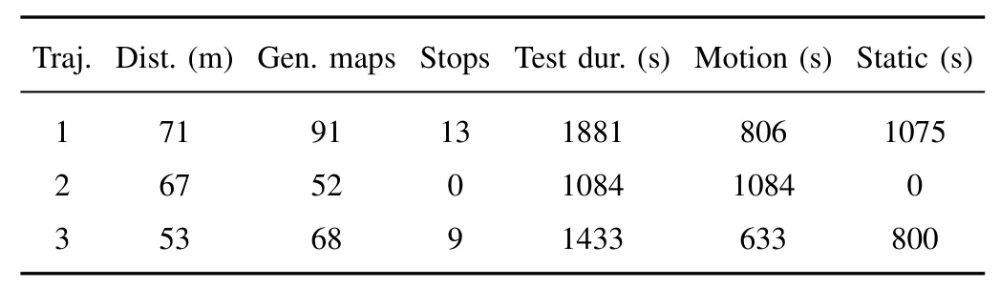

PRISM：面向非结构环境漫游车导航的多模态地形建图PRISM: Multimodal Terrain Mapping for Rover Navigation in Unstructured Environments
包含多模态标定、真实部署和导航接口，接近机器人闭环；摘要未说明地图时序融合、定位耦合、夜间性能和详细导航消融。
一句话工作总结
融合 RGB-D-T 感知和多模态 ViT，在嵌入式平台上生成供漫游车导航使用的地形可通行地图。
摘要
非结构环境导航需要可靠识别陡坡、岩石等危险地形。PRISM 以定制传感器套件采集对齐的 RGB、depth 与 thermal 图像，并以新型多模态 vision transformer 网络 OmniUnet 进行语义地形分割。作者用新标注的 BASEPROD 和 LAENTIEC 数据集验证系统，并通过真实野外实验展示应用。系统部署在资源受限嵌入式计算机上，可高效生成可通行地图并直接支持漫游车 Guidance、Navigation and Control 子系统。
Robotic navigation in unstructured environments requires robust situational awareness to safely traverse hazards such as steep slopes and rocky terrain. To address this challenge, perception systems increasingly rely on multimodal sensor fusion. Specifically, integrating thermal imagery with standard optical and depth sensors enhances terrain differentiation, directly improving the reliability of mapping algorithms. This paper presents PRISM, a multimodal perception system for terrain mapping in unstructured settings. PRISM leverages a custom sensor suite to capture aligned RGB, depth, and thermal (RGB-D-T) imagery. At its core is OmniUnet, a novel vision transformer-based network specifically designed for multimodal semantic terrain segmentation. We validated the proposed system using two newly annotated datasets (BASEPROD and LAENTIEC) and demonstrate its real-world applicability through physical field experiments. Deployed on a resource-constrained embedded computer, PRISM efficiently generates traversability maps that directly enable autonomous navigation via a rover's Guidance, Navigation, and Control (GNC) subsystem.
中文解读摘录
- 链接：arXiv 2607.16366
- 核心贡献：构建对齐 RGB、depth、thermal 的 RGB-D-T 传感系统，以 OmniUnet 多模态 ViT 做语义地形分割，并在资源受限嵌入式计算机上生成可通行地图供 GNC 使用。
- 为什么重要：强调真实野外、热视觉互补与嵌入式部署，比单纯离线分割更接近机器人感知—规划闭环。
- 待核查：地图坐标系与时序融合方式、深度/热成像外参稳定性、夜间和恶劣天气表现，以及导航消融实验。
图表/页面预览

{kind=link}

{kind=link}

{kind=link}

{kind=link}

{kind=link}

{kind=link}

{kind=link}
